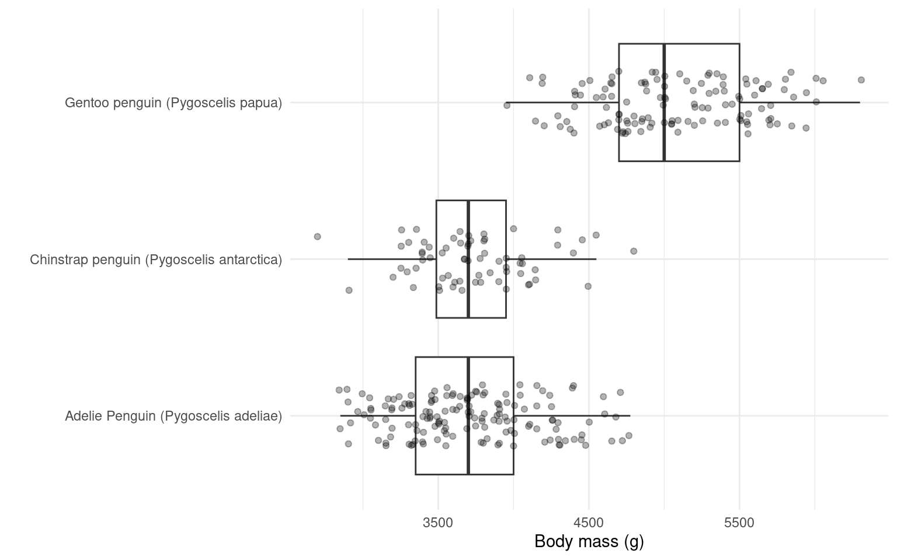
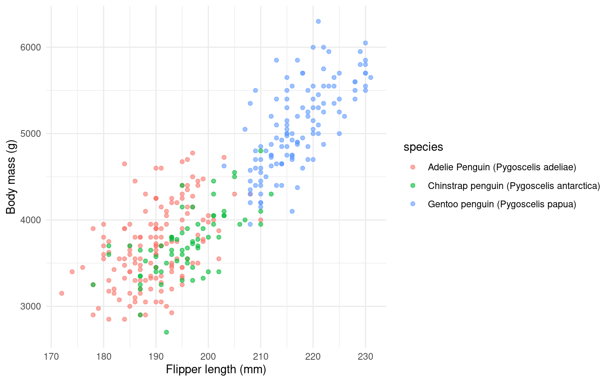

7 Check Data Consistency
7.0.1 Why check numeric consistency?
Numeric data can contain errors that aren’t immediately obvious. Values might be:
Biologically impossible (negative body mass, height exceeding known species maximum)
Data entry errors (decimal point in wrong place: 3500g recorded as 35g)
Wrong units (measurements in grams recorded in a column meant for kilograms)
Implausible combinations (male penguins recorded as laying eggs, heavy body mass with short flippers)
Unlike categorical or date errors which often cause R to throw warnings, implausible numeric values will silently propagate through your analysis, potentially leading to incorrect conclusions.
Just because a value is an outlier doesn’t mean it’s wrong. Similarly, a value within the normal range could still be an error if it’s inconsistent with other measurements. You need biological knowledge AND cross-variable checks to distinguish errors from legitimate variation.
7.0.2 Basic range checks
The first step is to examine the range of your numeric variables and ask: “Are these values biologically possible?”
| sample_number_min | sample_number_max | culmen_length_mm_min | culmen_length_mm_max | culmen_depth_mm_min | culmen_depth_mm_max | flipper_length_mm_min | flipper_length_mm_max | body_mass_g_min | body_mass_g_max | delta_15n_min | delta_15n_max | delta_13c_min | delta_13c_max |
|---|---|---|---|---|---|---|---|---|---|---|---|---|---|
| 1 | 152 | 32.1 | 59.6 | 13.1 | 21.5 | 172 | 231 | 2700 | 6300 | 7.6322 | 10.02544 | -27.01854 | -23.78767 |
Let’s focus on body mass:
7.0.3 Detecting Impossible values
Check for biologically impossible values - things that cannot exist in nature:
| study_name | sample_number | species | region | island | stage | individual_id | clutch_completion | date_egg | culmen_length_mm | culmen_depth_mm | flipper_length_mm | body_mass_g | sex | delta_15n | delta_13c | comments |
|---|
| study_name | sample_number | species | region | island | stage | individual_id | clutch_completion | date_egg | culmen_length_mm | culmen_depth_mm | flipper_length_mm | body_mass_g | sex | delta_15n | delta_13c | comments |
|---|
A body mass of exactly 0g is impossible - this likely represents a missing measurement that was coded as 0 instead of NA. This is a common data entry practice but is problematic for analysis because 0 is treated as a real value, not as missing data.
7.0.4 Species-specific checks
What’s plausible for one species may be implausible for another:
| species | min_mass | max_mass | mean_mass |
|---|---|---|---|
| Adelie Penguin (Pygoscelis adeliae) | 2850 | 4775 | 3700.662 |
| Chinstrap penguin (Pygoscelis antarctica) | 2700 | 4800 | 3733.088 |
| Gentoo penguin (Pygoscelis papua) | 3950 | 6300 | 5076.016 |
From the scientific literature, we know:
Gentoo penguins are the largest (typically 4500-6500g)
Adelie and Chinstrap are similar in size (typically 3000-4500g)
| study_name | sample_number | species | region | island | stage | individual_id | clutch_completion | date_egg | culmen_length_mm | culmen_depth_mm | flipper_length_mm | body_mass_g | sex | delta_15n | delta_13c | comments |
|---|---|---|---|---|---|---|---|---|---|---|---|---|---|---|---|---|
| PAL0910 | 110 | Adelie Penguin (Pygoscelis adeliae) | Anvers | Biscoe | Adult, 1 Egg Stage | N55A2 | Yes | 20/11/2009 | 43.2 | 19 | 197 | 4775 | MALE | 9.31735 | -25.45171 | NA |
When you find a species-implausible value, consider:
Is the measurement wrong? Is the species identification wrong? Are the units wrong? Is this a juvenile or unusual individual (still correct)?
7.0.5 Visual inspection

7.0.6 Cross-variable checks: Expected correlations
Individual variables might look fine, but relationships between variables can reveal errors. Body size measurements should correlate positively:
#| label: fig-mass-flipper
#| fig-cap: "Body mass should generally increase with flipper length within species. Points far from the trend may indicate measurement errors."
penguins_clean_names |>
ggplot(aes(x = flipper_length_mm, y = body_mass_g, color = species)) +
geom_point(alpha = 0.6) +
labs(
x = "Flipper length (mm)",
y = "Body mass (g)",
) +
theme_minimal()
| species | sex | flipper_length_mm | body_mass_g | island |
|---|
| species | sex | flipper_length_mm | body_mass_g | island |
|---|---|---|---|---|
| Adelie Penguin (Pygoscelis adeliae) | MALE | 184 | 4650 | Dream |
Deviations from expected correlations might indicate:
Measurement error on one variable Units confusion (one variable in wrong units) Species misidentification Legitimate individual variation (not always an error!)
7.0.7 Cross-variable checks: Biological impossibilities
Some variable combinations are biologically impossible:
| species | sex | date_egg | body_mass_g | island |
|---|---|---|---|---|
| Adelie Penguin (Pygoscelis adeliae) | MALE | 11/11/2007 | 3750 | Torgersen |
| Adelie Penguin (Pygoscelis adeliae) | MALE | 16/11/2007 | 3650 | Torgersen |
| Adelie Penguin (Pygoscelis adeliae) | MALE | 15/11/2007 | 4675 | Torgersen |
| Adelie Penguin (Pygoscelis adeliae) | MALE | 15/11/2007 | 3800 | Torgersen |
| Adelie Penguin (Pygoscelis adeliae) | MALE | 16/11/2007 | 4400 | Torgersen |
| Adelie Penguin (Pygoscelis adeliae) | MALE | 12/11/2007 | 4500 | Torgersen |
| Adelie Penguin (Pygoscelis adeliae) | MALE | 16/11/2007 | 4200 | Torgersen |
| Adelie Penguin (Pygoscelis adeliae) | MALE | 12/11/2007 | 3600 | Biscoe |
| Adelie Penguin (Pygoscelis adeliae) | MALE | 12/11/2007 | 3950 | Biscoe |
| Adelie Penguin (Pygoscelis adeliae) | MALE | 10/11/2007 | 3800 | Biscoe |
| Adelie Penguin (Pygoscelis adeliae) | MALE | 12/11/2007 | 3550 | Biscoe |
| Adelie Penguin (Pygoscelis adeliae) | MALE | 10/11/2007 | 3950 | Biscoe |
| Adelie Penguin (Pygoscelis adeliae) | MALE | 09/11/2007 | 3900 | Dream |
| Adelie Penguin (Pygoscelis adeliae) | MALE | 09/11/2007 | 3900 | Dream |
| Adelie Penguin (Pygoscelis adeliae) | MALE | 16/11/2007 | 4150 | Dream |
| Adelie Penguin (Pygoscelis adeliae) | MALE | 16/11/2007 | 3950 | Dream |
| Adelie Penguin (Pygoscelis adeliae) | MALE | 13/11/2007 | 4650 | Dream |
| Adelie Penguin (Pygoscelis adeliae) | MALE | 16/11/2007 | 3900 | Dream |
| Adelie Penguin (Pygoscelis adeliae) | MALE | 19/11/2007 | 4400 | Dream |
| Adelie Penguin (Pygoscelis adeliae) | MALE | 16/11/2007 | 4600 | Dream |
| Adelie Penguin (Pygoscelis adeliae) | MALE | 13/11/2007 | 3425 | Dream |
| Adelie Penguin (Pygoscelis adeliae) | MALE | 13/11/2007 | 4150 | Dream |
| Adelie Penguin (Pygoscelis adeliae) | MALE | 06/11/2008 | 4300 | Biscoe |
| Adelie Penguin (Pygoscelis adeliae) | MALE | 09/11/2008 | 4050 | Biscoe |
| Adelie Penguin (Pygoscelis adeliae) | MALE | 09/11/2008 | 3700 | Biscoe |
| Adelie Penguin (Pygoscelis adeliae) | MALE | 15/11/2008 | 3800 | Biscoe |
| Adelie Penguin (Pygoscelis adeliae) | MALE | 15/11/2008 | 3750 | Biscoe |
| Adelie Penguin (Pygoscelis adeliae) | MALE | 13/11/2008 | 4400 | Biscoe |
| Adelie Penguin (Pygoscelis adeliae) | MALE | 13/11/2008 | 4050 | Biscoe |
| Adelie Penguin (Pygoscelis adeliae) | MALE | 13/11/2008 | 3950 | Biscoe |
| Adelie Penguin (Pygoscelis adeliae) | MALE | 06/11/2008 | 4100 | Biscoe |
| Adelie Penguin (Pygoscelis adeliae) | MALE | 11/11/2008 | 4450 | Torgersen |
| Adelie Penguin (Pygoscelis adeliae) | MALE | 14/11/2008 | 3900 | Torgersen |
| Adelie Penguin (Pygoscelis adeliae) | MALE | 11/11/2008 | 4150 | Torgersen |
| Adelie Penguin (Pygoscelis adeliae) | MALE | 08/11/2008 | 4250 | Torgersen |
| Adelie Penguin (Pygoscelis adeliae) | MALE | 06/11/2008 | 3900 | Torgersen |
| Adelie Penguin (Pygoscelis adeliae) | MALE | 09/11/2008 | 4000 | Torgersen |
| Adelie Penguin (Pygoscelis adeliae) | MALE | 02/11/2008 | 4700 | Torgersen |
| Adelie Penguin (Pygoscelis adeliae) | MALE | 07/11/2008 | 4200 | Torgersen |
| Adelie Penguin (Pygoscelis adeliae) | MALE | 17/11/2008 | 3550 | Dream |
| Adelie Penguin (Pygoscelis adeliae) | MALE | 08/11/2008 | 3800 | Dream |
| Adelie Penguin (Pygoscelis adeliae) | MALE | 08/11/2008 | 3950 | Dream |
| Adelie Penguin (Pygoscelis adeliae) | MALE | 14/11/2008 | 4300 | Dream |
| Adelie Penguin (Pygoscelis adeliae) | MALE | 05/11/2008 | 4450 | Dream |
| Adelie Penguin (Pygoscelis adeliae) | MALE | 17/11/2008 | 4300 | Dream |
| Adelie Penguin (Pygoscelis adeliae) | MALE | 08/11/2008 | 4350 | Dream |
| Adelie Penguin (Pygoscelis adeliae) | MALE | 10/11/2008 | 4100 | Dream |
| Adelie Penguin (Pygoscelis adeliae) | MALE | 09/11/2009 | 4725 | Biscoe |
| Adelie Penguin (Pygoscelis adeliae) | MALE | 15/11/2009 | 4250 | Biscoe |
| Adelie Penguin (Pygoscelis adeliae) | MALE | 15/11/2009 | 3550 | Biscoe |
| Adelie Penguin (Pygoscelis adeliae) | MALE | 15/11/2009 | 3900 | Biscoe |
| Adelie Penguin (Pygoscelis adeliae) | MALE | 20/11/2009 | 4775 | Biscoe |
| Adelie Penguin (Pygoscelis adeliae) | MALE | 12/11/2009 | 4600 | Biscoe |
| Adelie Penguin (Pygoscelis adeliae) | MALE | 15/11/2009 | 4275 | Biscoe |
| Adelie Penguin (Pygoscelis adeliae) | MALE | 17/11/2009 | 4075 | Biscoe |
| Adelie Penguin (Pygoscelis adeliae) | MALE | 18/11/2009 | 3775 | Torgersen |
| Adelie Penguin (Pygoscelis adeliae) | MALE | 22/11/2009 | 3325 | Torgersen |
| Adelie Penguin (Pygoscelis adeliae) | MALE | 17/11/2009 | 3500 | Torgersen |
| Adelie Penguin (Pygoscelis adeliae) | MALE | 16/11/2009 | 3875 | Torgersen |
| Adelie Penguin (Pygoscelis adeliae) | MALE | 18/11/2009 | 4000 | Torgersen |
| Adelie Penguin (Pygoscelis adeliae) | MALE | 21/11/2009 | 4300 | Torgersen |
| Adelie Penguin (Pygoscelis adeliae) | MALE | 18/11/2009 | 4000 | Torgersen |
| Adelie Penguin (Pygoscelis adeliae) | MALE | 23/11/2009 | 3500 | Torgersen |
| Adelie Penguin (Pygoscelis adeliae) | MALE | 10/11/2009 | 4475 | Dream |
| Adelie Penguin (Pygoscelis adeliae) | MALE | 13/11/2009 | 3900 | Dream |
| Adelie Penguin (Pygoscelis adeliae) | MALE | 16/11/2009 | 3975 | Dream |
| Adelie Penguin (Pygoscelis adeliae) | MALE | 16/11/2009 | 4250 | Dream |
| Adelie Penguin (Pygoscelis adeliae) | MALE | 14/11/2009 | 3475 | Dream |
| Adelie Penguin (Pygoscelis adeliae) | MALE | 16/11/2009 | 3725 | Dream |
| Adelie Penguin (Pygoscelis adeliae) | MALE | 16/11/2009 | 3650 | Dream |
| Adelie Penguin (Pygoscelis adeliae) | MALE | 13/11/2009 | 4250 | Dream |
| Adelie Penguin (Pygoscelis adeliae) | MALE | 17/11/2009 | 3750 | Dream |
| Adelie Penguin (Pygoscelis adeliae) | MALE | 17/11/2009 | 4000 | Dream |
| Gentoo penguin (Pygoscelis papua) | MALE | 27/11/2007 | 5700 | Biscoe |
| Gentoo penguin (Pygoscelis papua) | MALE | 27/11/2007 | 5700 | Biscoe |
| Gentoo penguin (Pygoscelis papua) | MALE | 18/11/2007 | 5400 | Biscoe |
| Gentoo penguin (Pygoscelis papua) | MALE | 27/11/2007 | 5200 | Biscoe |
| Gentoo penguin (Pygoscelis papua) | MALE | 27/11/2007 | 5150 | Biscoe |
| Gentoo penguin (Pygoscelis papua) | MALE | 27/11/2007 | 5550 | Biscoe |
| Gentoo penguin (Pygoscelis papua) | MALE | 29/11/2007 | 5850 | Biscoe |
| Gentoo penguin (Pygoscelis papua) | MALE | 03/12/2007 | 5850 | Biscoe |
| Gentoo penguin (Pygoscelis papua) | MALE | 27/11/2007 | 6300 | Biscoe |
| Gentoo penguin (Pygoscelis papua) | MALE | 27/11/2007 | 5350 | Biscoe |
| Gentoo penguin (Pygoscelis papua) | MALE | 27/11/2007 | 5700 | Biscoe |
| Gentoo penguin (Pygoscelis papua) | MALE | 27/11/2007 | 5050 | Biscoe |
| Gentoo penguin (Pygoscelis papua) | MALE | 29/11/2007 | 5100 | Biscoe |
| Gentoo penguin (Pygoscelis papua) | MALE | 29/11/2007 | 5650 | Biscoe |
| Gentoo penguin (Pygoscelis papua) | MALE | 29/11/2007 | 5550 | Biscoe |
| Gentoo penguin (Pygoscelis papua) | MALE | 29/11/2007 | 5250 | Biscoe |
| Gentoo penguin (Pygoscelis papua) | MALE | 03/12/2007 | 6050 | Biscoe |
| Gentoo penguin (Pygoscelis papua) | MALE | 13/11/2008 | 5400 | Biscoe |
| Gentoo penguin (Pygoscelis papua) | MALE | 02/11/2008 | 5250 | Biscoe |
| Gentoo penguin (Pygoscelis papua) | MALE | 09/11/2008 | 5350 | Biscoe |
| Gentoo penguin (Pygoscelis papua) | MALE | 04/11/2008 | 5700 | Biscoe |
| Gentoo penguin (Pygoscelis papua) | MALE | 04/11/2008 | 4750 | Biscoe |
| Gentoo penguin (Pygoscelis papua) | MALE | 03/11/2008 | 5550 | Biscoe |
| Gentoo penguin (Pygoscelis papua) | MALE | 09/11/2008 | 5400 | Biscoe |
| Gentoo penguin (Pygoscelis papua) | MALE | 02/11/2008 | 5300 | Biscoe |
| Gentoo penguin (Pygoscelis papua) | MALE | 04/11/2008 | 5300 | Biscoe |
| Gentoo penguin (Pygoscelis papua) | MALE | 04/11/2008 | 5000 | Biscoe |
| Gentoo penguin (Pygoscelis papua) | MALE | 04/11/2008 | 5050 | Biscoe |
| Gentoo penguin (Pygoscelis papua) | MALE | 03/11/2008 | 5000 | Biscoe |
| Gentoo penguin (Pygoscelis papua) | MALE | 06/11/2008 | 5550 | Biscoe |
| Gentoo penguin (Pygoscelis papua) | MALE | 03/11/2008 | 5300 | Biscoe |
| Gentoo penguin (Pygoscelis papua) | MALE | 13/11/2008 | 5650 | Biscoe |
| Gentoo penguin (Pygoscelis papua) | MALE | 04/11/2008 | 5700 | Biscoe |
| Gentoo penguin (Pygoscelis papua) | MALE | 09/11/2008 | 5800 | Biscoe |
| Gentoo penguin (Pygoscelis papua) | MALE | 13/11/2008 | 5550 | Biscoe |
| Gentoo penguin (Pygoscelis papua) | MALE | 03/11/2008 | 5000 | Biscoe |
| Gentoo penguin (Pygoscelis papua) | MALE | 09/11/2008 | 5100 | Biscoe |
| Gentoo penguin (Pygoscelis papua) | MALE | 06/11/2008 | 5800 | Biscoe |
| Gentoo penguin (Pygoscelis papua) | MALE | 06/11/2008 | 6000 | Biscoe |
| Gentoo penguin (Pygoscelis papua) | MALE | 09/11/2008 | 5950 | Biscoe |
| Gentoo penguin (Pygoscelis papua) | MALE | 18/11/2009 | 5450 | Biscoe |
| Gentoo penguin (Pygoscelis papua) | MALE | 15/11/2009 | 5350 | Biscoe |
| Gentoo penguin (Pygoscelis papua) | MALE | 22/11/2009 | 5600 | Biscoe |
| Gentoo penguin (Pygoscelis papua) | MALE | 20/11/2009 | 5300 | Biscoe |
| Gentoo penguin (Pygoscelis papua) | MALE | 25/11/2009 | 5550 | Biscoe |
| Gentoo penguin (Pygoscelis papua) | MALE | 25/11/2009 | 5400 | Biscoe |
| Gentoo penguin (Pygoscelis papua) | MALE | 01/12/2009 | 5650 | Biscoe |
| Gentoo penguin (Pygoscelis papua) | MALE | 27/11/2009 | 5200 | Biscoe |
| Gentoo penguin (Pygoscelis papua) | MALE | 18/11/2009 | 4925 | Biscoe |
| Gentoo penguin (Pygoscelis papua) | MALE | 18/11/2009 | 5250 | Biscoe |
| Gentoo penguin (Pygoscelis papua) | MALE | 22/11/2009 | 5600 | Biscoe |
| Gentoo penguin (Pygoscelis papua) | MALE | 18/11/2009 | 5500 | Biscoe |
| Gentoo penguin (Pygoscelis papua) | MALE | 01/12/2009 | 5500 | Biscoe |
| Gentoo penguin (Pygoscelis papua) | MALE | 10/11/2009 | 5500 | Biscoe |
| Gentoo penguin (Pygoscelis papua) | MALE | 09/11/2009 | 5500 | Biscoe |
| Gentoo penguin (Pygoscelis papua) | MALE | 20/11/2009 | 5950 | Biscoe |
| Gentoo penguin (Pygoscelis papua) | MALE | 27/11/2009 | 5500 | Biscoe |
| Gentoo penguin (Pygoscelis papua) | MALE | 25/11/2009 | 5850 | Biscoe |
| Gentoo penguin (Pygoscelis papua) | MALE | 01/12/2009 | 6000 | Biscoe |
| Gentoo penguin (Pygoscelis papua) | MALE | 22/11/2009 | 5750 | Biscoe |
| Gentoo penguin (Pygoscelis papua) | MALE | 22/11/2009 | 5400 | Biscoe |
| Chinstrap penguin (Pygoscelis antarctica) | MALE | 19/11/2007 | 3900 | Dream |
| Chinstrap penguin (Pygoscelis antarctica) | MALE | 26/11/2007 | 3650 | Dream |
| Chinstrap penguin (Pygoscelis antarctica) | MALE | 21/11/2007 | 3725 | Dream |
| Chinstrap penguin (Pygoscelis antarctica) | MALE | 28/11/2007 | 3750 | Dream |
| Chinstrap penguin (Pygoscelis antarctica) | MALE | 21/11/2007 | 3700 | Dream |
| Chinstrap penguin (Pygoscelis antarctica) | MALE | 28/11/2007 | 3775 | Dream |
| Chinstrap penguin (Pygoscelis antarctica) | MALE | 26/11/2007 | 4050 | Dream |
| Chinstrap penguin (Pygoscelis antarctica) | MALE | 22/11/2007 | 4050 | Dream |
| Chinstrap penguin (Pygoscelis antarctica) | MALE | 30/11/2007 | 3300 | Dream |
| Chinstrap penguin (Pygoscelis antarctica) | MALE | 30/11/2007 | 4400 | Dream |
| Chinstrap penguin (Pygoscelis antarctica) | MALE | 03/12/2007 | 3400 | Dream |
| Chinstrap penguin (Pygoscelis antarctica) | MALE | 28/11/2007 | 3800 | Dream |
| Chinstrap penguin (Pygoscelis antarctica) | MALE | 28/11/2007 | 4150 | Dream |
| Chinstrap penguin (Pygoscelis antarctica) | MALE | 25/11/2008 | 3800 | Dream |
| Chinstrap penguin (Pygoscelis antarctica) | MALE | 14/11/2008 | 4550 | Dream |
| Chinstrap penguin (Pygoscelis antarctica) | MALE | 24/11/2008 | 4300 | Dream |
| Chinstrap penguin (Pygoscelis antarctica) | MALE | 24/11/2008 | 4100 | Dream |
| Chinstrap penguin (Pygoscelis antarctica) | MALE | 25/11/2008 | 3600 | Dream |
| Chinstrap penguin (Pygoscelis antarctica) | MALE | 14/11/2008 | 4800 | Dream |
| Chinstrap penguin (Pygoscelis antarctica) | MALE | 24/11/2008 | 4500 | Dream |
| Chinstrap penguin (Pygoscelis antarctica) | MALE | 24/11/2008 | 3950 | Dream |
| Chinstrap penguin (Pygoscelis antarctica) | MALE | 14/11/2008 | 3550 | Dream |
| Chinstrap penguin (Pygoscelis antarctica) | MALE | 17/11/2009 | 4450 | Dream |
| Chinstrap penguin (Pygoscelis antarctica) | MALE | 27/11/2009 | 4300 | Dream |
| Chinstrap penguin (Pygoscelis antarctica) | MALE | 23/11/2009 | 3250 | Dream |
| Chinstrap penguin (Pygoscelis antarctica) | MALE | 21/11/2009 | 3950 | Dream |
| Chinstrap penguin (Pygoscelis antarctica) | MALE | 23/11/2009 | 4050 | Dream |
| Chinstrap penguin (Pygoscelis antarctica) | MALE | 27/11/2009 | 3450 | Dream |
| Chinstrap penguin (Pygoscelis antarctica) | MALE | 21/11/2009 | 4050 | Dream |
| Chinstrap penguin (Pygoscelis antarctica) | MALE | 21/11/2009 | 3800 | Dream |
| Chinstrap penguin (Pygoscelis antarctica) | MALE | 27/11/2009 | 3950 | Dream |
| Chinstrap penguin (Pygoscelis antarctica) | MALE | 19/11/2009 | 4000 | Dream |
| Chinstrap penguin (Pygoscelis antarctica) | MALE | 21/11/2009 | 3775 | Dream |
| Chinstrap penguin (Pygoscelis antarctica) | MALE | 21/11/2009 | 4100 | Dream |
7.0.8 Cross-variable checks: Spatial consistency
Location variables should match known species distributions:
| species | Biscoe | Dream | Torgersen |
|---|---|---|---|
| Adelie Penguin (Pygoscelis adeliae) | 44 | 56 | 52 |
| Chinstrap penguin (Pygoscelis antarctica) | 0 | 68 | 0 |
| Gentoo penguin (Pygoscelis papua) | 124 | 0 | 0 |
7.0.8.1 Known biology:
Adelie penguins occur on all three islands
Chinstrap penguins only on Dream island
Gentoo penguins only on Biscoe island
7.0.9 Flagging suspicious values
Rather than immediately removing suspicious values, best practice is to flag them for review:
# Create flags for different types of potential issues
penguins_flagged <- penguins_clean_names |>
mutate(
# Single-variable flags
flag_impossible = case_when(
body_mass_g <= 0 ~ "negative_or_zero_mass",
flipper_length_mm <= 0 ~ "negative_or_zero_flipper",
TRUE ~ NA_character_
),
flag_implausible = case_when(
body_mass_g < 2000 ~ "suspiciously_light",
body_mass_g > 7000 ~ "suspiciously_heavy",
TRUE ~ NA_character_
),
# Cross-variable flags
flag_species_size = case_when(
species == "Adelie" & body_mass_g > 5000 ~ "Adelie_too_heavy",
species == "Gentoo" & body_mass_g < 4000 ~ "Gentoo_too_light",
TRUE ~ NA_character_
),
# Any flag present?
any_flag = !is.na(flag_impossible) | !is.na(flag_implausible) |
!is.na(flag_species_size)
)
# Summarize flagged observations
penguins_flagged |>
summarise(
n_impossible = sum(!is.na(flag_impossible)),
n_implausible = sum(!is.na(flag_implausible)),
n_species_size = sum(!is.na(flag_species_size)),
total_flagged = sum(any_flag)
)| n_impossible | n_implausible | n_species_size | total_flagged |
|---|---|---|---|
| 0 | 0 | 0 | 0 |